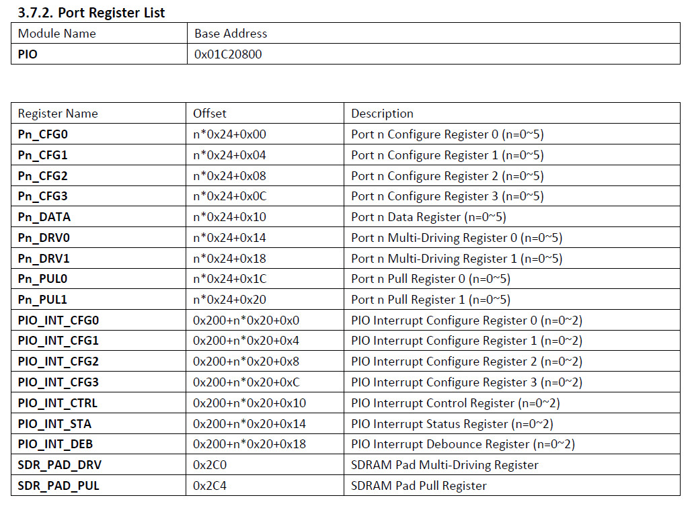
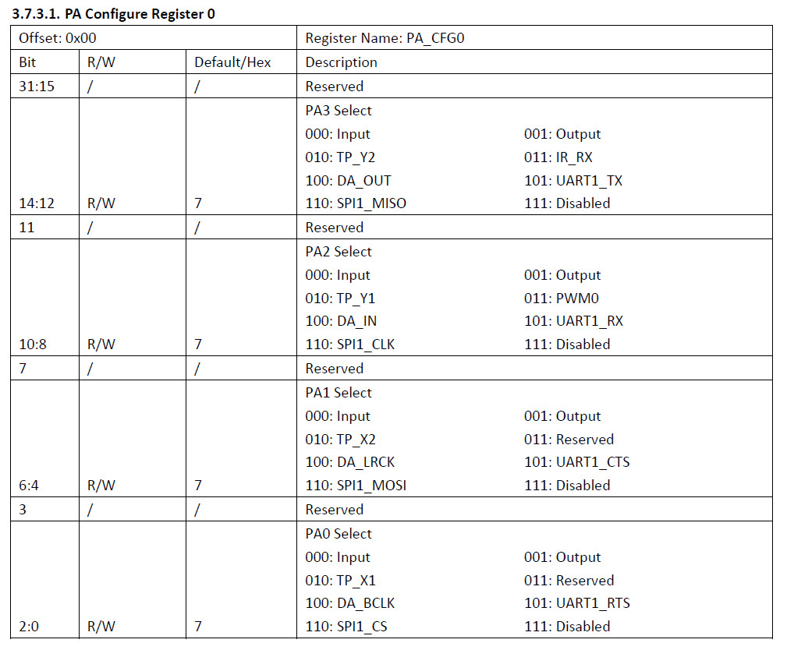
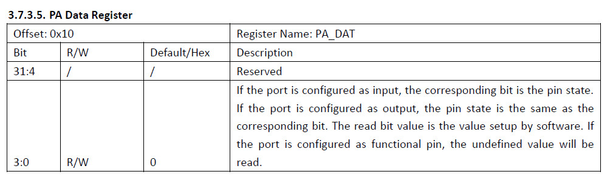

參考資料：
http://nano.lichee.pro/
https://mangopi.org/mangopi_r
暫存器



.global _start
.equiv GPIO_BASE, 0x01c20800
.equiv PA, (0 * 0x24)
.equiv PORT_CFG0, 0x00
.equiv PORT_DATA, 0x10
.arm
.text
_start:
.long 0xea000016
.byte 'e', 'G', 'O', 'N', '.', 'B', 'T', '0'
.long 0, __spl_size
.byte 'S', 'P', 'L', 2
.long 0, 0
.long 0, 0, 0, 0, 0, 0, 0, 0
.long 0, 0, 0, 0, 0, 0, 0, 0
_vector:
b reset
b .
b .
b .
b .
b .
b .
b .
reset:
ldr r0, =GPIO_BASE
ldr r1, =0x1000
str r1, [r0, #(PA + PORT_CFG0)]
0:
ldr r1, =0x08
str r1, [r0, #(PA + PORT_DATA)]
ldr r2, =500000
1:
subs r2, #1
bne 1b
ldr r1, =0x00
str r1, [r0, #(PA + PORT_DATA)]
ldr r2, =500000
2:
subs r2, #1
bne 2b
b 0b
.end
main.ld
MEMORY {
RAM : ORIGIN = 0, LENGTH = 32K
}
SECTIONS {
text : {
PROVIDE(__spl_start = .);
*(.text*)
PROVIDE(__spl_end = .);
} > RAM
PROVIDE(__spl_size = __spl_end - __spl_start);
}
Makefile
all: arm-none-eabi-as -mcpu=arm9 -o main.o main.s arm-none-eabi-ld -T main.ld -o main.elf main.o arm-none-eabi-objcopy -O binary main.elf main.bin gcc mksunxi.c -o mksunxi ./mksunxi main.bin run: sunxi-fel -p write 0 main.bin && sunxi-fel exec 0 clean: rm -rf main.bin main.o main.elf
接著插入USB至電腦，然後按住BOOT按鍵後，再按一下RESET按鍵(如果NAND Flash是空白的內容，直接插入USB即可進入燒錄模式)
$ lsusb
Bus 002 Device 081: ID 1f3a:efe8 Onda (unverified) V972 tablet in flashing mode
編譯、執行
$ make
arm-none-eabi-as -mcpu=arm9 -o main.o main.s
arm-none-eabi-ld -T main.ld -o main.elf main.o
arm-none-eabi-objcopy -O binary main.elf main.bin
gcc mksunxi.c -o mksunxi
./mksunxi main.bin
The bootloader head has been fixed, spl size is 512 bytes.
$ make run
sunxi-fel -p write 0 main.bin && sunxi-fel exec 0
100% [================================================] 1 kB, 143.5 kB/s
完成